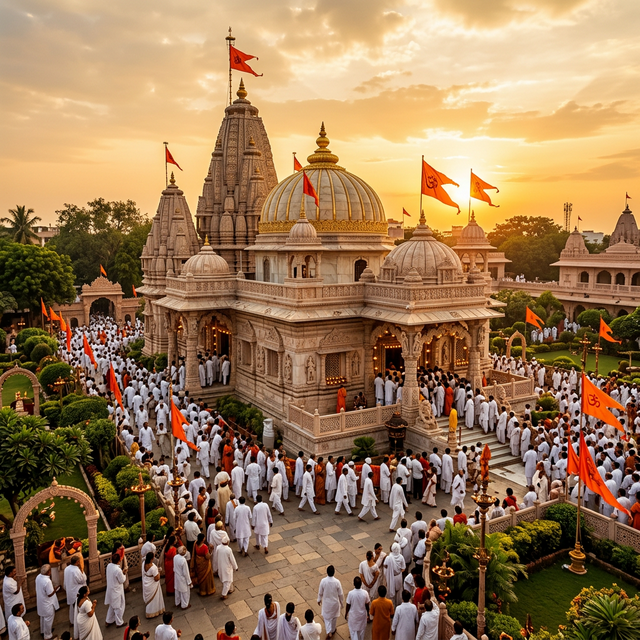
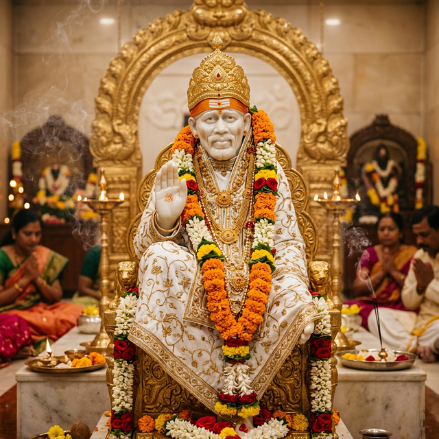
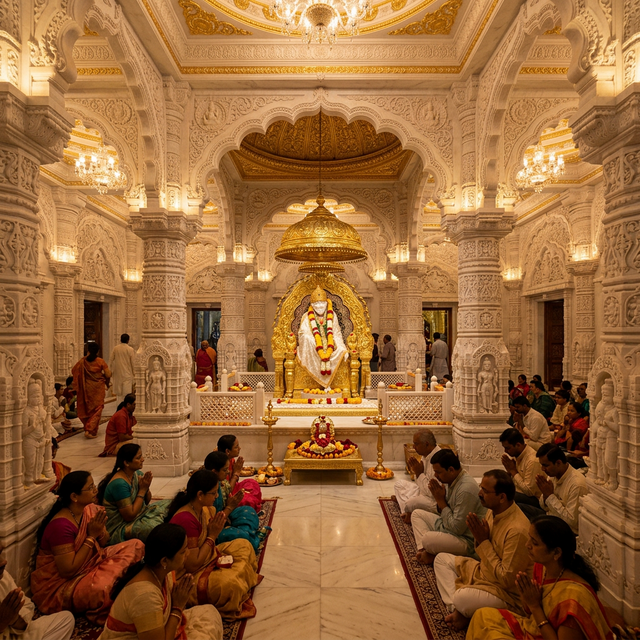
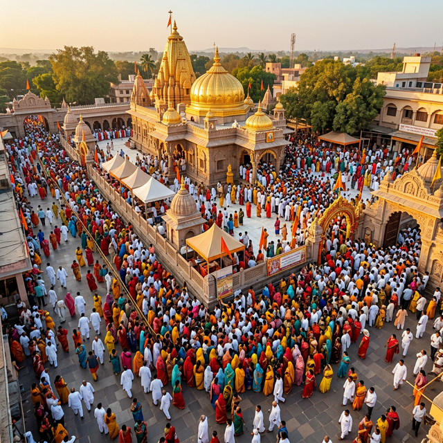
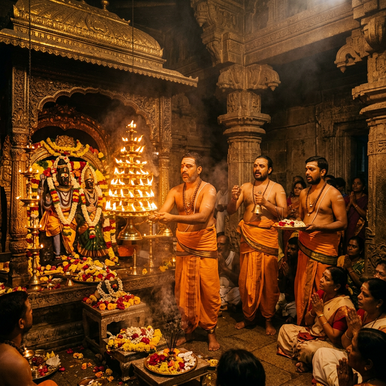

Faith • Patience • Devotion
"Shraddha aur Saburi" — Sai Baba
The Shirdi Sai Baba Temple, located in the small but spiritually monumental town of Shirdi in Ahmednagar district, Maharashtra, India, is one of the most visited pilgrimage sites in the world. Dedicated to Sai Baba of Shirdi — a 19th-century spiritual master revered by both Hindus and Muslims — the temple draws millions of devotees from across the globe who come seeking blessings, healing, and divine guidance.
The temple complex is centered around the Samadhi Mandir, the final resting place of Sai Baba, who attained Mahasamadhi on October 15, 1918. The magnificent white marble structure was consecrated in 1922 and has since been expanded into a sprawling complex encompassing the Dwarkamai Mosque, Chavadi, Gurusthan, and Lendi Baug — each holding deep spiritual significance in the life and teachings of Sai Baba.
Sai Baba lived in Shirdi from around 1858 until his passing in 1918, spending the majority of his life in the humble Dwarkamai Mosque. He was known for his miraculous deeds, his love for all beings regardless of religion or caste, and his teachings centered on universal brotherhood, charity, contentment, and inner peace. His simple yet profound message of "Sabka Malik Ek" ("One God governs all") continues to resonate with generations of followers worldwide.
The Shri Saibaba Sansthan Trust, established in 1922, manages the temple and its operations. The trust has grown into one of the wealthiest religious trusts in India, channeling its resources into hospitals, schools, dharmashalas (pilgrim rest houses), and various charitable services, making the temple not just a spiritual hub but a center of social welfare and community development.
Daily Visitors
Temple Founded
Maharashtra, India
Countries Represented




Sai Baba's most celebrated teaching, "Shraddha" (Faith) and "Saburi" (Patience), forms the cornerstone of his spiritual philosophy embraced by millions worldwide.
Over 6 million devotees visit the Shirdi temple annually, making it one of the top five most visited pilgrimage sites in India and among the busiest in the world.
The Shri Saibaba Sansthan Trust is one of the wealthiest religious trusts in India with assets and donations worth thousands of crores, funding hospitals, education, and welfare.
The sacred fire (Dhuni) in Dwarkamai has been burning continuously since Sai Baba's time in the 19th century — an unbroken flame of devotion for over 150 years.
Five Aartis are performed daily — from the pre-dawn Kakad Aarti to the late-night Shej Aarti — each drawing thousands of devotees who experience divine grace.
Sai Baba transcended religious boundaries. Revered by Hindus, Muslims, Zoroastrians, and people of all faiths, his message of "Sabka Malik Ek" remains timeless.
5:15 AM
The auspicious pre-dawn aarti to wake Sai Baba. Devotees gather in large numbers to seek his morning blessings.
12:00 PM
The midday aarti marking the time of Sai Baba's noon meals. Accompanied by melodious bhajans and prayers.
6:00 PM
The evening aarti conducted with incense and diyas. The temple glows with golden light during this enchanting ceremony.
10:30 PM
The bedtime aarti to bid good night to Sai Baba. A deeply moving ceremony with soft bhajans and spiritual peace.
| Day | Temple Opens | Morning Darshan | Afternoon Break | Evening Darshan | Closes |
|---|---|---|---|---|---|
| Monday – Friday | 4:00 AM | 4:30 AM – 12:00 PM | 12:00 PM – 4:00 PM | 4:00 PM – 10:30 PM | 11:00 PM |
| Saturday – Sunday | 4:00 AM | 4:30 AM – 12:00 PM | 12:00 PM – 4:00 PM | 4:00 PM – 11:00 PM | 11:30 PM |
| Festival Days | Extended timings (check official notice) | 12:00 AM | |||
Can't visit Shirdi in person? The Shirdi Sai Baba Temple offers Virtual Darshan so you can connect spiritually with Sai Baba from the comfort of your home. Watch the live aarti ceremonies, witness the sacred rituals, and feel the divine presence through our live stream.
Live Stream
LIVEClick "Watch Live Darshan" above to open the official live stream in a new tab.
Shirdi Airport (SAG) is just 14 km away. Direct flights from Mumbai, Delhi, Hyderabad, Bengaluru, and other major cities. Taxis and buses connect to the temple easily.
Sainagar Shirdi Railway Station (SNSI) is 2 km from the temple. Direct trains from Mumbai, Pune, Delhi, Hyderabad. Auto-rickshaws available outside.
Shirdi is well-connected via NH-61. Regular bus services from Nashik (91 km), Pune (190 km), and Mumbai (260 km). Private taxis and cabs readily available.